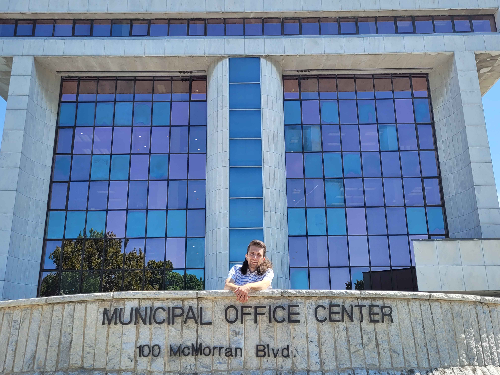

Intro
As a lifelong resident of St. Clair County, I take great pride in the communities that make up this vibrant area. I was born and raised in Marysville and, in 2022, I made the move to Port Huron, continuing my deep connection to the region I love. I am an active volunteer with the Camp Cavell Conservancy, where I serve on the finance committee, helping to support the organization’s mission of fostering growth and stewardship in our natural spaces. My passion for animals extends to my work as a dog foster, rescuing and rehabilitating dogs in need of a second chance at life. I hold a Bachelor of Accountancy from Walsh College and have used my skills to help organizations and causes I believe in. As a steward of the environment, I strive to manage my personal waste contributions and encourage sustainable practices within my community. I am deeply committed to ensuring our region continues to thrive for future generations, and I am excited to bring my experience, values, and dedication to public service.
I have lived in St. Clair County my entire life, and I take great pride in the communities that make up our area. In 2022, I moved to Port Huron, preserving my strong connection to the place I call home, having been born and raised in Marysville. As a volunteer on the finance committee for the Camp Cavell Conservancy, I actively support the organization's mission of fostering growth and stewardship in our natural spaces. My role as a dog foster, rescuing and rehabilitating dogs in need of a second chance, reflects my deep passion for animal welfare. I hold a Bachelor’s Degree in Accountancy from Walsh College and have used my expertise to champion causes and organizations that align with my values. As an environmental steward, I strive to reduce my personal waste and encourage eco-friendly practices in the community. I am excited to bring my experience, values, and dedication to public service, and I am committed to ensuring that our communities continue to flourish for future generations.